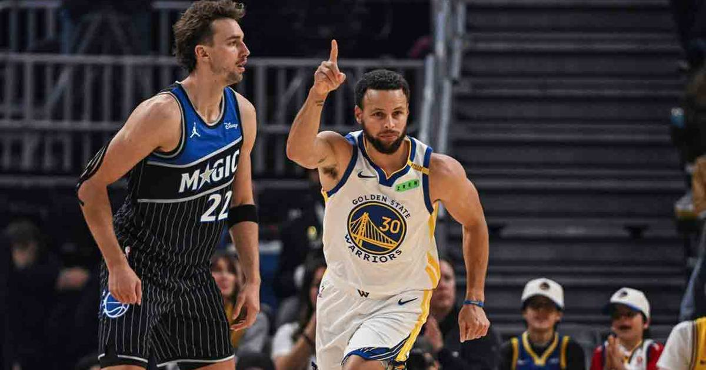

Stephen Curry drops 41 as Warriors win seventh straight in OT over Magic
Stephen Curry scored 41 points — including 12 unanswered in the final 2:21 of regulation — as the Warriors beat Orlando 126-119 in overtime for their seventh straight win. At 38, Curry just set the record for most 40-point games by a player 35 or older, and did something no player has done in the tracking era.

Disclosure: this post contains affiliate links. I earn a commission on qualifying purchases.
What happened
The Golden State Warriors beat the Orlando Magic 126-119 in overtime on Saturday night at Chase Center, and Stephen Curry was the whole story — again.
Curry finished with 41 points, six rebounds, and six assists on 13-of-19 shooting, 5-of-10 from three, and a perfect 10-of-10 at the free-throw line. His three-point play with 1:38 left in overtime put the Warriors ahead for good, and his driving hoop 44 seconds later sealed his 41-point night. The Warriors won their seventh straight game. They started the season 0-3. They are now 7-3.
The finish
This game should not have been close. The Warriors led by 16 at halftime, and Orlando — short-handed, 2-7, on a losing streak — had no business being in it. But the Magic exploded for 37 points in the third quarter, and Jamal Cain's putback with two seconds left in regulation sent it to overtime.
Then Curry took over. He scored 12 unanswered points himself in the final 2:21 of regulation, and in the fourth quarter and overtime combined, he went a perfect 4-for-4 on go-ahead shots in the final two minutes. That is the first time in the tracking era — since the start of the 1996-97 season — that a player has made at least four field goals without a miss under those circumstances in a single game. All told, there were six different instances down the stretch when Curry made a shot to either tie the game or take the lead.
Wendell Carter Jr. missed two free throws with 1:15 left in overtime that would have tied it. Curry made sure Orlando never got another chance.
Why this one is historic
The 41 was Curry's second 40-point game this season, and his fourth in his last five games with at least 30 points. It was also his 16th 40-point game since turning 35 years old — breaking a tie with LeBron James for the most in NBA history by a player age 35 or older. Curry is 38.
And there was another milestone buried in the box score: Curry joined Oscar Robertson and Russell Westbrook as only the third point guard in NBA history to record 25,000 points and 5,000 rebounds in his career. He also passed 6,000 career assists, according to Elias.
The streak around him matters too. This is the Warriors' longest winning streak since seven in a row from March 3-15, 2025, and their first seven-game win streak without Jimmy Butler since January and February of their 2022 championship season. The team that started 0-3 and looked finished is now the hottest team in the West.
The help
Curry did not do it alone. Rookie Yaxel Lendeborg had 23 points, eight rebounds, and three blocks in his 10th career game — including a key three-pointer in overtime. Brandin Podziemski added 15 points and seven rebounds. Every Warriors player who logged minutes scored, and the bench outscored Orlando's second unit 42-31.
Orlando fought hard — 18 three-pointers, a 24-3 edge on the offensive boards, and Cain's 18 points and 12 rebounds off the bench — but it was the Magic's fourth straight loss, and Curry was the difference between a win and a loss.
What it means
There is a temptation to treat nights like this as routine for Curry. They are not routine. A 38-year-old point guard just went 4-for-4 on go-ahead shots in the final two minutes of regulation and overtime, set the record for 40-point games after 35, and joined two of the greatest point guards ever in a club that only had two members. The Warriors started 0-3. They have won seven straight. And the reason is the same as it has been for a decade: when the game gets tight, Stephen Curry decides it.
The box score
Final score: Warriors 126, Magic 119 (OT)
Curry: 41 pts, 6 reb, 6 ast, 13-19 FG, 5-10 3PT, 10-10 FT
Lendeborg: 23 pts, 8 reb, 3 blk
Podziemski: 15 pts, 7 reb
Warriors: 7-3, seven straight wins
Magic: 2-7, four straight losses
Sources
• Stephen Curry makes plays in OT, Warriors top Magic for 7th straight win (Reuters)
• Curry scores 41 points as Warriors beat Magic in OT for seventh straight win (Sportsnet)
• How Steph Curry made NBA history in Warriors' OT win vs Magic (NBC Sports Bay Area)
Gear up: Fanatics